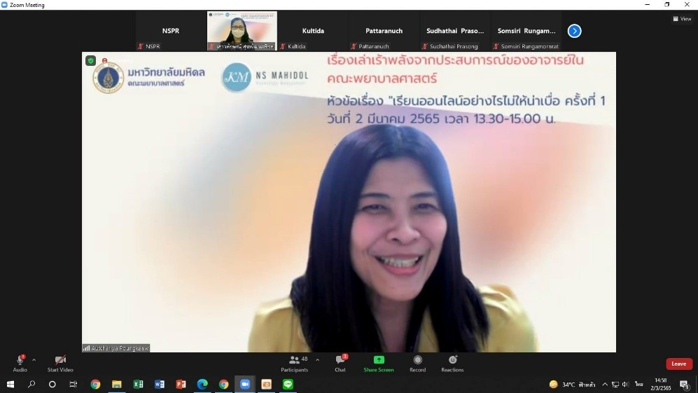
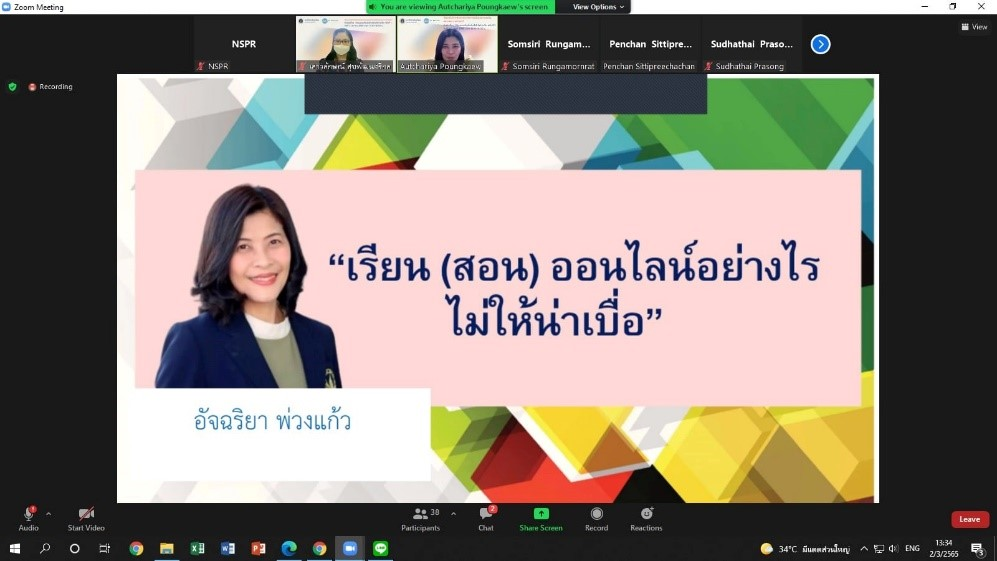

ข่าวสารภาควิชาฯ ประจำปี 2565
รองศาสตราจารย์ ดร.อัจฉริยา พ่วงแก้ว ร่วมเป็นวิทยากรในกิจกรรมเรื่องเล่าเร้าพลังจากประสบการณ์ของอาจารย์ในคณะพยาบาลศาสตร์ หัวข้อ “เรียนออนไลน์อย่างไรไม่ให้น่าเบื่อ”
วันที่ 2 มีนาคม 2565 คณะกรรมการพัฒนาองค์กรแห่งการเรียนรู้และการจัดการความรู้ คณะพยาบาลศาสตร์ มหาวิทยาลัยมหิดล จัดกิจกรรมเรื่องเล่าเร้าพลังจากประสบการณ์ของอาจารย์ในคณะพยาบาลศาสตร์ หัวข้อเรื่อง “เรียนออนไลน์อย่างไรไม่ให้น่าเบื่อ” แก่บุคลากรของคณะฯ โดยมี รองศาสตราจารย์ ดร.อัจฉริยา พ่วงแก้ว ภาควิชาการพยาบาลอายุรศาสตร์ อาจารย์ ดร.ภัทรนุช วิทูรสกุล ภาควิชาการพยาบาลกุมารเวชศาสตร์ อาจารย์ ดร. เกศศิริ วงษ์คงคำ ภาควิชาการพยาบาลศัลยศาสตร์ และ อาจารย์ ดร.กุลธิดา ทรัพย์สมบูรณ์ ภาควิชาการพยาบาลสูติศาสตร์-นรีเวชวิทยา เป็นวิทยากร และ อาจารย์ ดร.เสาวลักษณ์ สุขพัฒนศรีกุล ภาควิชาการพยาบาลรากฐาน เป็นผู้ดำเนินรายการ กิจกรรมดังกล่าวในรูปแบบออนไลน์ ผ่านโปรแกรม Zoom meeting

